Neste tutorial, você verá como construir uma página web para monitoramento
de sinais de potenciômetros ligados ao Arduino,
usando apenas o JavaScript como liguagem de programação no cliente, servidor e
no
hardware.
Para isso será utilizado o NodeJS para execução do JavaScript fora
do navegador, o framework Johnny-five que possibilita fazer a comunicação serial
entre o Node e a placa Arduino, e o Socket.io, biblioteca que será usada para
enviar em tempo real os dados do Arduino para o gráfico no dashboard.
Tecnologias utilizadas
NodeJS
O NodeJS é basicamente um ambiente de execução
JavaScript do lado servidor, permitindo a
interpretação da linguagem fora do ambiente dos
browsers. Sua criação abriu a possibilidade
para desenvolver vários sistemas diferentes em
JavaScript que vão desde programas desktop, servidores
web complexos, até sistemas baseados em hardware como é o
caso da aplicação a ser desenvolvida neste tutorial.
NodeJS site oficial
Johnny-Five
Johnny-five é um framework que possibilita interagir e controlar
hardware utilizando a linguagem JavaScript no NodeJS.
Tendo seu lançamento em 2012 a biblioteca e a coleção de recursos
são mantidas até hoje por uma comunidade ampla de desenvolvedores
aficionados em robótica, hardware e software.
Johnny-Five site oficial
Socket.io
O Socket.io é uma biblioteca JavaScript para aplicações web realizarem
comunicação bidirecional, em tempo real e baseada em eventos
entre clientes e servidores da web.
Ele é constituído de duas partes, uma biblioteca do lado do front-end, a que é
executada
nos navegadores, e a do lado back-end que é executada no lado do servidor no
NodeJS. A biblioteca dispõe de várias funcionalidades como detecção de desconexão e
suporte à reconexão automática.
Socket.io site oficial
Material necessário:
Para seguir com este tutorial, você irá precisar dos seguintes componentes:
Instale o Visual Studio Express 2010 32 bit
(certifique-se de que você tem todas as dependencias
do C++ selecionadas)
Instale o Python 2.7.3
Abra o cmd e digite
set PATH=%PATH%;C:\Python27
Instale o node-gyp
npm install -g node-gyp
Instalando pacotes no NodeJS
Após a devida instalação do Johnny-five devemos
na pasta do projeto, assim digite no terminal:
npm install --save johnny-five
Também será necessário instalar o Express para criar nosso servidor web para isso digite
no
terminal:
npm install --save express
Para instalação do Socket.io no NodeJS insira o comando:
npm install --save socket.io
Preparando o Arduino
Antes de começarmos a codificar precisamos
deixar o arduino no ponto para receber os sinais
de voltagem dos potenciômetros, para isso siga o esquema a
seguir colocando a saída dos potenciômetros
nas entradas analógicas A0 e A1 do Arduino
Criando o servidor da aplicação
Criando JavaScript do back-end
Após toda essa configuração, finalmente
podemos criar o primeiro arquivo, que será o back-end da
aplicação. assim crie o arquivo server.js e importe as devidas
bibliotecas e frameworks anteriormente instaladas na pasta do NodeJS
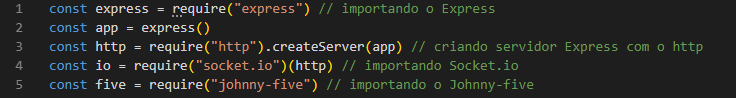
Logo após isso definimos uma constante referente a porta que o servidor será
vinculado e definimos a pasta que será enviada nas requisições para o cliente
neste caso criaremos uma pasta denominada client, onde estará
JavaScript client-side, o CSS e o HTML
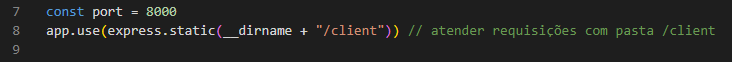
Criando a interface da aplicação
Criando HTML
Após a criação da pasta client, precisamos criar um arquivo html, assim
crie um arquivo chamado index.html
Repare que foi usado bibliotecas externas, a PlotlyJS para construir os gráficos
e a jQuery que será usada no script customizado e na PlotlyJS
Você pode baixar ou obter o CDN do jQuery no site oficial:
Para referenciar o Socket.io basta adcionar um script com o endereço:
"socket.io/socket.io.js"
Isso já faz com que o Socket.io funcione, uma vez que ele já está
instalado no módulo da pasta do projeto no NodeJS
Uma vez criado o HTML, podemos criar o script que será vinculado a essa página, onde terá
toda a
configuração referente aos gráficos, além da manipulação da DOM
Primeiramente criaremos as variaveis a serem utilizadas
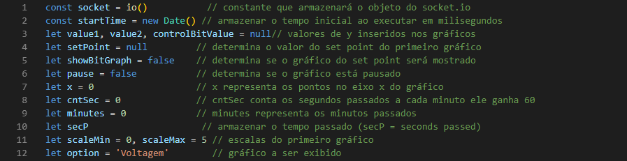
Antes de plotar os gráficos com a PlotlyJS é preciso definir suas configurações
assim é preciso criar um objeto para o layout do gráfico e arrays com as linhas de cada
gráfico
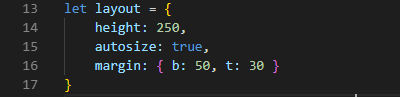
Cada linha de um gráfico na PlotlyJS é um objeto, como varias linhas serão
criadas
é mais adequado criar uma função construtora para instanciar objetos do tipo Trace (linha),
sendo assim escreva a seguinte função:
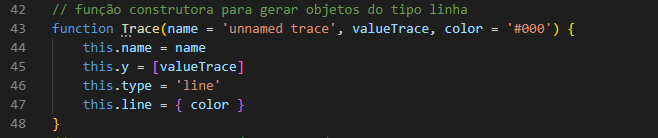
Depois de criada a função construtora que servirá como um molde para a instanciação dos
objetos,
podemos de instanciar as linhas, colocando-as dentro de arrays
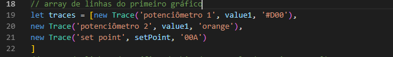
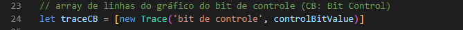
Definiremos uma função que retornará o tempo passado em segundos, este valor será utilizado
para
saber o tempo passado desde o início da execução de um gráfico
Agora criaremos uma função para atualizar o primeiro gráfico que será o de voltagem
Mais a frente passareos essa função como callback para um setInterval
Faremos outra função para atualizar o gráfico do bit de controle, com a ressalva de que
não será preciso definir algumas variáveis, uma vez que podemos usar as variáveis
de iteração da função anterior, pois os dois gráficos serão executados simultaneamente com a
função
setInterval
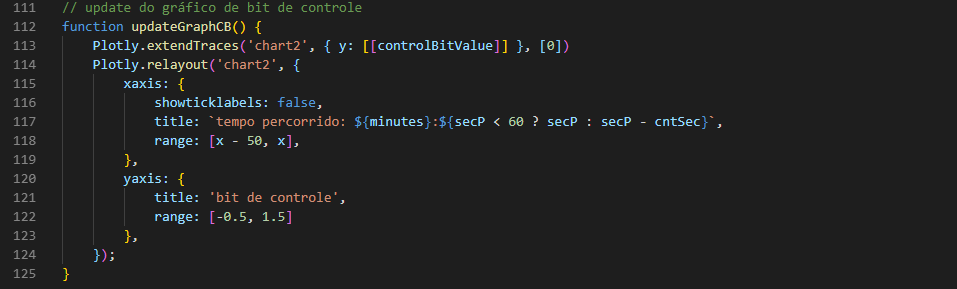
Agora definiremos alguns comandos a serem executados assim que a página for carregada.
Primeiramente plotamos os 2 gráficos, alteramos algumas configurações da DOM e
colocamos as chamadas para a função socket.on que atribuirá eventos a serem chamados
se determinadas mensagens do servidor forem recebidas.
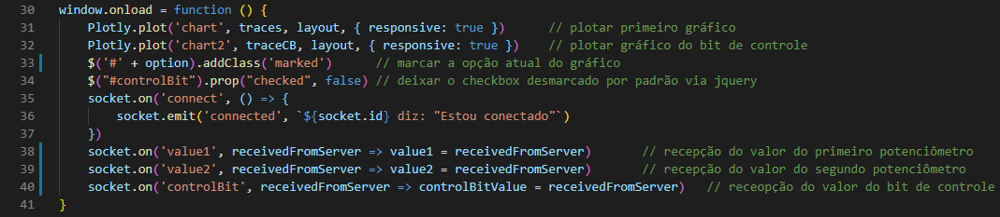
Depois de plotados os gráficos, podemos passar as funções de atualizar
como callbacks para a função setInterval e assim fazer os gráficos
atualizarem em tempo real
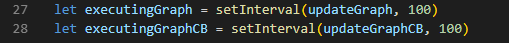
Definiremos uma função para pausar ou retomar os gráficos, funcionalidade importante par
caso o usuário deseje visualizar os valores ou mesmo fazer uma captura de tela
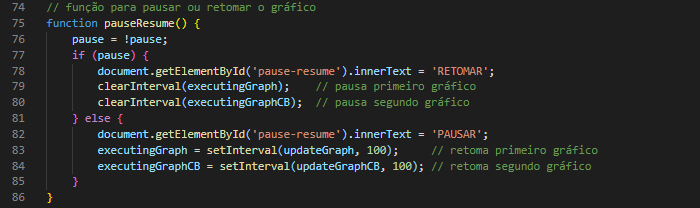
Definimos também uma função para alterar o Set Point, onde o usuário digitará um novo
Set Point e esse valor passará a ser exibido no gráfico de voltagem, além de ir pro servidor
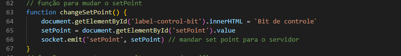
Finalizando o servidor
Depois de criar todo o front-end da aplicação, está na hora de terminarmos
o servidor e escrevermos todo o código do Arduino e do Socket.io do lado servidor.
O primeiro passo é declararmos um objeto do tipo porta referente ao Arduino
além de algumas variáveis importantes como os valores dos potenciômetros e o valor do Set
Point
desta forma escreva o seguinte código:
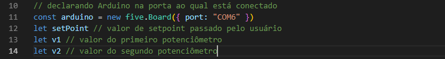
Após isso vamos definir o que será feito quando o Arduino estiver no estado de pronto.
Primeiramente instanciamos os objetos dos potenciômetros
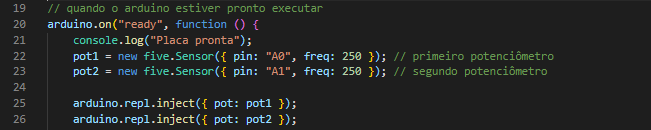
Depois de instanciar os potenciômetros, vamos criar toda a base do back-end da aplicação.
Definimos o que será feito quand o usuário conectar na aplicação. definimos que
quando os potenciômetros estiverem nos estados de prontos, a aplicação precisa enviar esses
dados em tempo real,
utilizaremos um intervalo de tempo de 300 milisegundos, ou seja, a cada 300 milisegundos o
servidor mandará os dados
do Arduino para o cliente é aí que entra o Socket.io com a função emit na aplicação.
Desta forma colocamos as funções referentes ao Socket.io para quando os potenciômetros
estiverem prontos, os dados serem mandados para o cliente com o socket.emit dentro de um
setinterval.
Note que é preciso realizar uma conversão dos valores dos potenciômetros,
uma vez que o UNO possui conversor ADC de 10 bits de resolução, assim lê valores entre 0 e
1023,
desta forma é preciso realizar a conversão para tensão, multiplicando por 5/1024.
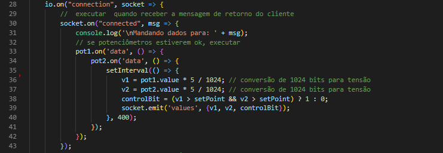
Abaixo escrevemos um trecho de código para alterar o Set Point quando o usuário o tiver
alterado
no cliente.
Para isso escreva:
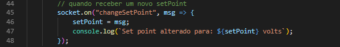
Desta forma temos a função completa que será executada quando o Arduino estiver pronto
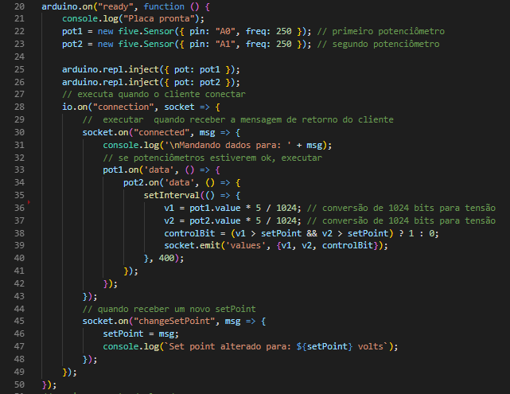
Finalizando o back-end, só é preciso fazer o http ouvir na porta anteriormente declarada,
para assim podermos acessar a aplicação de maneira local no endereço: http://localhost:8000
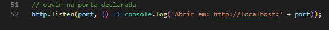
Resultado:
Acessando o endereço citado podermos finalmente ver a aplicação pronta: